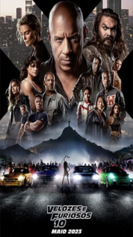

Velozes e furiosos
Sinopse
O fim da estrada está chegando.
Ao longo de muitas missões e lutando contra todos os obstáculos impossíveis, Dom Toretto (Vin Diesel) e sua família foram mais espertos, mais furiosos e mais rápidos do que todos os inimigos em seu caminho. Agora, eles enfrentam o seu oponente mais letal: uma ameaça terrível das sombras do passado, alimentada por sede de vingança e determinada a destruir esta família e a destruir tudo - e todos - que Dom mais ama.
Elenco
Vin Diesel
Vin Diesel
Personagem : Dominic Toretto
Michelle Rodriguez
Michelle Rodriguez
Personagem : Letty Toretto
Jason Momoa
Jason Momoa
Personagem : Dante Reyes
Tyrese Gibson
Tyrese Gibson
Personagem : Roman Pearce
Ludacris
Ludacris
Personagem : Tej Parker
John Cena
John Cena
Personagem : Jakob Toretto
Nathalie Emmanuel
Nathalie Emmanuel
Personagem : Megan Ramsey
Jordana Brewster
Jordana Brewster
Personagem : Mia Toretto
Voltar